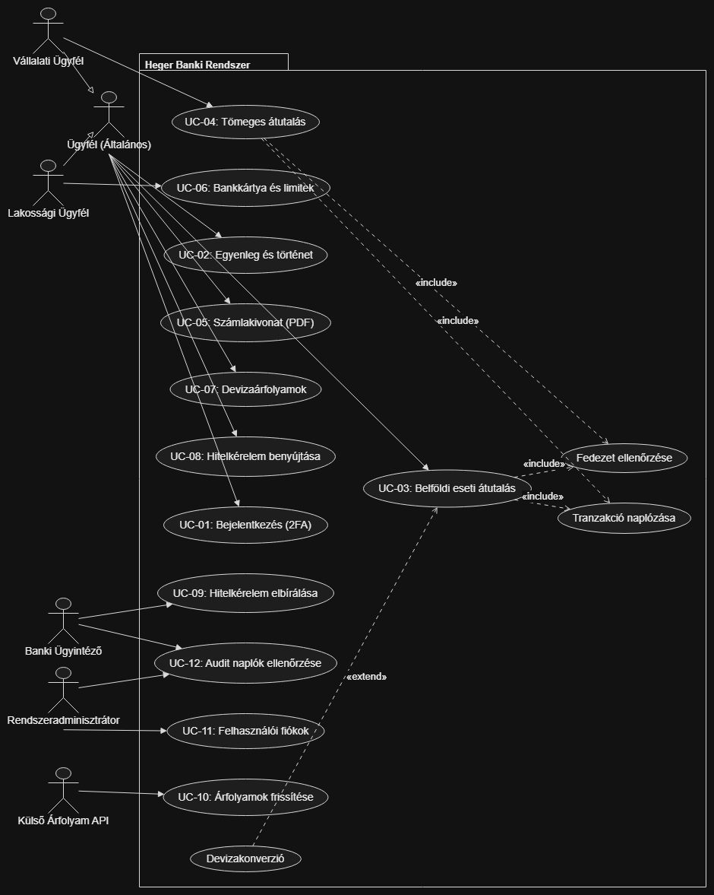

A mi csapatunk: Heger Kft.
A választott téma: Banki szoftver
(H3) Software követelmény specifikáció (SRS)
Gyakorlatvezető oktató:
Sátán Ádám
Csoportunk tagjai:
| Baranyai Benedek | BCOMKG | benedek.baranyai@student.uni-miskolc.hu |
| Harik Zoltán Örs | POZY70 | zoltan.ors.harik@student.uni-miskolc.hu |
| Radó Attila | JX93VX | attila.rado@student.uni-miskolc.hu |
| Ötvös Csongor | RKOW9K | csongor.otvos@student.uni-miskolc.hu |
| Csóka Nándor Gábor | MDX9OH | nandor.gabor.csoka@student.uni-miskolc.hu |
Dátum: 2026-10-31
A dokumentum története:
| Dátum | Verziószám | Rövid leírás | Módosította |
| 2026-10-26 |
0.1 |
A Software követelmény specifikáció (SRS) kezdeti vázlatának létrehozása a tantárgyi sablon alapján. |
Baranyai Benedek |
| 2026-10-28 |
0.5 |
A funkcionális követelmények, aktorok és a 12 részletes use case specifikáció kidolgozása a diagram alapján. |
Radó Attila |
| 2026-10-29 |
0.8 |
A nem funkcionális követelmények (használhatóság, megbízhatóság, teljesítmény), interfészek és szabványok fejezetek kidolgozása. |
Csóka Nándor Gábor |
| 2026-10-31 |
1.0 |
A bevezetés, termék áttekintés, tervezési korlátok és mellékletek véglegesítése, az SRS dokumentum teljes lezárása. |
Harik Zoltán Örs |
Tartalomjegyzék:
1. Bevezetés (Introduction)
1.1. Cél
Jelen Software követelmény specifikáció (SRS) célja a Heger Kft. által fejlesztendő modern banki szoftverrendszer funkcionális és nem funkcionális követelményeinek pontos, formai és szakmai meghatározása. A dokumentum rögzíti a rendszerrel szemben támasztott felhasználói elvárásokat, a működési korlátokat, a biztonsági elveket, valamint az alkalmazandó technológiai alapokat. Ez a dokumentáció szolgál a tervezési fázis (H4 Analízis modell és H5 Rendszerterv), a tesztelés, valamint az átadás-átvétel műszaki alapjául.
1.2. Hatókör
A specifikált szoftverrendszer neve: Heger Banki Rendszer (Heger Online Banking Platform). A rendszer egy biztonságos, webes felületű lakossági és vállalati internetbank, amely felváltja a hagyományos, nehezen kezelhető banki felületeket. A szoftver hatóköre kiterjed a többdevizás számlavezetésre, belföldi forint átutalások azonnali lebonyolítására, vállalati tömeges megbízások rögzítésére, valós idejű devizakonverzióra külső árfolyam-szolgáltató bevonásával, digitális hiteligénylési folyamatra, valamint belső banki ügyintézői bírálatra és részletes biztonsági audit naplózásra.
1.3. Fogalmak és rövidítések
A dokumentumban alkalmazott legfontosabb szakmai kifejezések:
- SRS: Software Requirements Specification (Software követelmény specifikáció).
- AFR: Azonnali Fizetési Rendszer (Magyar Nemzeti Bank által előírt 5 másodpercen belüli elszámolás).
- 2FA: Kétlépcsős azonosítás (Two-Factor Authentication).
- JWT: JSON Web Token, állapotmentes digitális aláírt hitelesítési token.
- CDV kód: Cégjegyzék- és számlaszám-ellenőrző algoritmus.
- ACID: Atomicity, Consistency, Isolation, Durability (adatbázis megbízhatósági alapelvek).
- Audit Log: Rendszereseményeket és pénzügyi műveleteket rögzítő biztonsági napló.
A teljes és részletes fogalomtár a különálló Szótár (Fogalomtár) oldalon található meg.
1.4. Hivatkozások
- Heger Kft. (H1) Projekt terv (projekt_terv.html)
- Heger Kft. (H2) Vízió dokumentum (vizio_dokumentum.html)
- Heger Kft. (H3) Felhasználói dokumentáció v1.0 (felhasznaloi_dokumentacio.html)
- Heger Kft. Szótár és Fogalomtár (szotar.html)
- Dr. Mileff Péter tantárgyi követelményei és sablonjai (Miskolci Egyetem, IIT)
- Magyar Nemzeti Bank (MNB) pénzforgalmi és informatikai biztonsági ajánlásai
- PSD2 európai uniós fizetési irányelv (Directive 2015/2366/EU)
1.5. A dokumentum további részeinek áttekintése
A specifikáció további fejezetei az alábbi logikai sorrendben épülnek fel: A 2. fejezet bemutatja a termék általános környezetét, a felhasználói csoportokat és a legfőbb korlátozásokat. A 3. fejezet tárgyalja a rendszer funkcionális követelményeit, amely tartalmazza a teljes rendszer UML Use Case diagramját, az aktorok pontos leírását, valamint az összes használati eset lépésről lépésre történő kidolgozását. A 4-7. fejezetek a minőségi és nem funkcionális elvárásokat rögzítik (használhatóság, megbízhatóság, teljesítmény, karbantarthatóság). A 8-10. fejezetek a technikai megkötéseket, help rendszert és külső könyvtárakat határozzák meg. A 11-12. fejezetek az interfészeket és szabványokat írják le, a 13. fejezet pedig a mellékleteket foglalja össze.
2. Áttekintés (Overview)
2.1. A termék környezete és távlatai
A Heger Banki Rendszer egy modern, háromrétegű webes kliens-szerver platform. Nem önmagában zárt szigetként működik, hanem szervesen illeszkedik a banki informatikai ökoszisztémába. Kapcsolatot tart a relációs adatbázis-kiszolgálóval (PostgreSQL), kommunikál a külső piaci árfolyam API szolgáltatóval, valamint felkészített a bankközi elszámoló rendszerekhez való későbbi közvetlen csatlakozásra. Kliensoldalon szabványos webböngészőkből érhető el, ezáltal független az ügyfelek operációs rendszerétől és eszköztípusától.
2.2. A legfontosabb funkciók összefoglalása
- Erős, kétlépcsős felhasználói hitelesítés (e-mail, jelszó, 2FA ellenőrző kód).
- Többdevizás számlakezelés (HUF, EUR, USD), valós idejű egyenleg lekérdezés és tételes tranzakciós történet.
- Belföldi eseti forint átutalások indítása azonnali alaki és fedezeti ellenőrzéssel.
- Vállalati tömeges megbízások rögzítése és kötegelt végrehajtása.
- Hivatalos havi bankszámlakivonatok előállítása és letöltése PDF formátumban.
- Bankkártya napi vásárlási és készpénzfelvételi limitek módosítása, valamint azonnali kártyazárolás.
- Valós idejű devizaváltás piaci árfolyamok alapján forint és devizaszámlák között.
- Digitális hiteligénylési adatlap kitöltése és beküldése törlesztőrészlet-kalkulációval.
- Banki ügyintézői felület a hitelkérelmek bírálatához és az ügyfélprofilok vizsgálatához.
- Rendszeradminisztrátori jogosultságkezelés és részletes biztonsági audit napló lekérdezés.
2.3. A felhasználók jellemzői és csoportjai
- Lakossági ügyfél: Átlagos informatikai ismeretekkel rendelkező magánszemély, aki tiszta, áttekinthető kezelőfelületet igényel az alapvető pénzügyeihez (egyenleg, utalás, kártyakezelés, személyi kölcsön).
- Vállalati ügyfél: Pénzügyi adminisztrátor vagy cégvezető, aki nagy mennyiségű tételt kezel egyszerre, csoportos kifizetéseket indít, és magasabb napi utalási limitekkel dolgozik.
- Banki ügyintéző: A pénzintézet szakmai munkatársa, aki alapos banki szabályismerettel rendelkezik, hitelbírálatokat végez és ellenőrzi a kérelmezők hátterét.
- Rendszeradminisztrátor: Magas informatikai felkészültségű szakember, aki a fiókok karbantartását, a szerverbeállításokat és a biztonsági naplók ellenőrzését végzi.
2.4. Általános korlátozások
- A pénzügyi tranzakcióknak meg kell felelniük a hatályos pénzforgalmi jogszabályoknak és bankbiztonsági direktíváknak (PSD2, MNB).
- A személyes és pénzügyi adatok védelmére kötelezően alkalmazni kell a GDPR előírásait.
- Az érzékeny jelszavakat tilos nyers szövegként tárolni, Bcrypt hash algoritmus használata kötelező.
- A hálózati kommunikáció kizárólag titkosított HTTPS (TLS 1.3) csatornán történhet.
2.5. Feltételezések és függőségek
- Feltételezzük, hogy az ügyfelek rendelkeznek stabil internetkapcsolattal és modern böngészővel.
- A devizaváltási kalkuláció folyamatos működéséhez elengedhetetlen a külső árfolyam REST API stabil rendelkezésre állása.
- A kétlépcsős azonosítás feltételezi, hogy az ügyfél rendelkezik működőképes hitelesítő alkalmazással vagy SMS fogadására alkalmas mobiltelefonnal.
3. A rendszer funkciói (Specific Requirements)
3.1. Rendszer Use Case diagram
A Heger Banki Rendszer teljes funkcionális felépítését, az aktorokat, a használati eseteket és a köztük lévő kapcsolatokat az alábbi diagram foglalja össze:

3.2. A rendszer szereplői (Aktorok)
- Ügyfél (Általános aktor): Alapvető szereplő, aki a bank szolgáltatásait igénybe veszi. Rendelkezik azonosítóval, beléphet a rendszerbe, lekérdezheti számláit, eseti átutalást kezdeményezhet, számlakivonatot tölthet le, árfolyamokat nézhet és hitelkérelmet nyújthat be.
- Lakossági Ügyfél: Az általános Ügyfél leszármazottja. Kifejezetten a magánszemélyekre jellemző funkciókat éri el, mint például a hozzá tartozó bankkártyák kezelése és napi használati limitek beállítása.
- Vállalati Ügyfél: Szintén az általános Ügyfél leszármazottja. A céges profil sajátosságaként jogosult nagy tételszámú tömeges átutalásokat indítani egyetlen jóváhagyási lépéssel.
- Banki Ügyintéző: A bank belső munkatársa. Feladata az ügyfelek által beadott hitelkérelmek vizsgálata és elbírálása, valamint az ügyfélprofilok és naplóbejegyzések ellenőrzése panaszkezelés során.
- Rendszeradminisztrátor: Kiemelt jogosultságú belső felhasználó, aki a rendszer biztonsági paramétereit kezeli, feloldja a zárolt felhasználói fiókokat, és ellenőrzi a biztonsági audit naplókat.
- Külső Árfolyam API (System Actor): Időzített külső gépi szolgáltatás, amely a nemzetközi és nemzeti devizaárfolyamokat szolgáltatja JSON formátumban a banki árfolyamtábla frissítéséhez.
3.3. Részletes használati esetek (Use Case leírások)
UC-01: Bejelentkezés és 2FA hitelesítés
- Rövid leírás: A felhasználó (ügyfél, ügyintéző vagy adminisztrátor) azonosítja magát a rendszerben az e-mail címe, jelszava és egy egyszer használatos kétlépcsős biztonsági kód segítségével.
- Aktorok: Ügyfél, Banki Ügyintéző, Rendszeradminisztrátor.
- Prekondíciók: A felhasználó rendelkezik aktív regisztrációval és a fiókja nincs zárolt státuszban.
- Postkondíciók: A felhasználó sikeresen belép, a szerver digitálisan aláírt JWT tokent állít ki a munkamenethez, amely meghatározza a jogosultsági szintet.
- Szokásos működés (Main Flow):
- A felhasználó megnyitja a bejelentkező oldalt és megadja az e-mail címét és jelszavát.
- A rendszer ellenőrzi a jelszó Bcrypt lenyomatát az adatbázisban.
- Sikeres jelszóellenőrzés után a rendszer 2FA kódot kér, és elküldi az egyszer használatos kódot.
- A felhasználó beírja a 6 számjegyű kódot.
- A rendszer validálja a kódot, legenerálja a JWT tokent, és a felhasználói szerepkörnek megfelelő kezdőoldalra irányít.
- Alternatív esetek: Ha a felhasználó korábban megbízhatónak jelölte a böngészőt, a 2FA kérés átugorható az érvényességi időn belül.
- Kivételes esetek:
- Hibás jelszó: A rendszer hibaüzenetet jelenít meg, növeli a sikertelen próbálkozások számlálóját.
- 3 sikertelen próbálkozás után a fiók 15 percre zárolásra kerül, és biztonsági naplóbejegyzés keletkezik.
- Lejárt vagy hibás 2FA kód esetén a rendszer új kód megadását kéri.
- Kapcsolatok: A többi védett use case előfeltétele.
UC-02: Számlaegyenleg és történet lekérdezése
- Rövid leírás: Az ügyfél megtekinti a bankszámlái aktuális elérhető egyenlegét, könyvelt egyenlegét és az elmúlt időszak tranzakciós listáját.
- Aktorok: Ügyfél.
- Prekondíciók: Érvényes bejelentkezett állapot (UC-01).
- Postkondíciók: A felület megjeleníti a számlák adatait és a szűrt tranzakciókat.
- Szokásos működés (Main Flow):
- Az ügyfél a főoldali számlalistára navigál.
- A rendszer lekéri az ügyfélhez rendelt aktív számlák adatait a PostgreSQL adatbázisból.
- A kliens megjeleníti a számlaszámokat, devizanemeket és egyenlegeket.
- Az ügyfél rákattint egy adott számlára a részletes számlatörténet megtekintéséhez.
- A rendszer időrendben, a legfrissebbel kezdve listázza a könyvelt terheléseket és jóváírásokat.
- Alternatív esetek: Az ügyfél szűrést állíthat be dátumtartományra, összegre vagy tranzakciótípusra.
- Kivételes esetek: Hálózati hiba esetén a rendszer figyelmeztet, hogy az adatok betöltése sikertelen, és felajánlja az újrapróbálkozást.
- Kapcsolatok: Nincs közvetlen al-use case kapcsolata.
UC-03: Belföldi eseti átutalás indítása
- Rövid leírás: Az ügyfél forint alapú eseti átutalást kezdeményez egy belföldi bankszámlára.
- Aktorok: Ügyfél.
- Prekondíciók: Érvényes bejelentkezett állapot (UC-01), legalább egy pozitív egyenlegű forrásszámla.
- Postkondíciók: A forrásszámla egyenlege levonásra kerül, a tranzakció az adatbázisban könyvelődik, és audit napló készül.
- Szokásos működés (Main Flow):
- Az ügyfél kiválasztja az indító forrásszámlát.
- Megadja a kedvezményezett nevét, 24 jegyű számlaszámát, az összeget és az opcionális közleményt.
- A rendszer ellenőrzi a megadott számlaszám alaki helyességét (CDV algoritmus).
- A rendszer lefuttatja a fedezet és számlastátusz ellenőrzését.
- Az ügyfél áttekinti az adatokat az ellenőrző képernyőn, majd megerősíti az utalást.
- A rendszer végrehajtja a tranzakciót, és rögzíti az audit naplóban.
- A képernyőn megjelenik a tranzakció sikerességét igazoló bizonylat.
- Alternatív esetek: Ha a forrásszámla és a küldött összeg devizaneme eltér, a folyamat kibővül az automatikus devizakonverzióval.
- Kivételes esetek:
- Formailag hibás számlaszám: A rendszer azonnal pirossal jelzi a hibát és letiltja a jóváhagyó gombot.
- Fedezethiány: A rendszer tájékoztatja az ügyfelet, hogy a rendelkezésre álló összeg nem elegendő.
- Napi limit túllépése: A rendszer figyelmeztet, hogy a megadott összeg meghaladja a beállított napi limitet.
- Kapcsolatok:
- <<include>> Fedezet és számlastátusz ellenőrzése
- <<include>> Tranzakció audit naplózása
- <<extend>> Devizakonverzió végrehajtása (ha eltérő a devizanem)
UC-04: Tömeges átutalás indítása
- Rövid leírás: A vállalati ügyfél egyetlen művelettel több tételből álló kifizetési csomagot indít el.
- Aktorok: Vállalati Ügyfél.
- Prekondíciók: Érvényes bejelentkezett állapot vállalati szerepkörrel, aktív céges számla.
- Postkondíciók: Az összes helyes tétel átutalásra kerül, a forrásszámla egyenlege az összeggel csökken, csoportos naplóbejegyzés keletkezik.
- Szokásos működés (Main Flow):
- A felhasználó megnyitja a tömeges utalási felületet és kiválasztja a terhelendő céges számlát.
- Feltölt egy strukturált állományt (CSV formátum) vagy táblázatosan rögzíti a tételeket.
- A rendszer tételenként ellenőrzi a számlaszámok formai érvényességét és kiszámítja a teljes végösszeget.
- A rendszer lefuttatja az összegzett fedezetellenőrzést.
- A felhasználó egyetlen megerősítéssel jóváhagyja a teljes csomagot.
- A rendszer tranzakcióként feldolgozza az utalásokat és audit naplót készít.
- Alternatív esetek: Ha a fájlban hibás tételek találhatók, a rendszer lehetőséget ad a hibás sorok javítására vagy kihagyására a helyes tételek indítása mellett.
- Kivételes esetek: Ha a forrásszámla egyenlege a teljes csomagösszegnél kisebb, a rendszer nem engedi elindítani a kötegelt megbízást.
- Kapcsolatok:
- <<include>> Fedezet és számlastátusz ellenőrzése
- <<include>> Tranzakció audit naplózása
UC-05: Számlakivonat letöltése (PDF)
- Rövid leírás: Az ügyfél hivatalos, lezárt havi kivonatot generál és tölt le PDF formátumban a választott számlájához.
- Aktorok: Ügyfél.
- Prekondíciók: Érvényes bejelentkezés, létező számlaforgalmi adatok a kért időszakban.
- Postkondíciók: A böngésző letölti a strukturált, aláírt PDF dokumentumot.
- Szokásos működés (Main Flow):
- Az ügyfél a számlakivonatok menüpontba lép.
- Kiválasztja az érintett számlát, az évet és a hónapot.
- A letöltés gombra kattint.
- A szerver lekéri az adott havi nyitóegyenleget, forgalmi tételeket és záróegyenleget.
- A háttérrendszer összeállítja a formázott PDF dokumentumot és átadja a böngészőnek mentésre.
- Alternatív esetek: Egyedi időintervallumra szóló időközi forgalmi kimutatás kérése.
- Kivételes esetek: Ha az adott hónapban nem történt számlamozgás, a rendszer 0 forgalmú nullás igazolást állít ki.
- Kapcsolatok: Nincs al-use case függősége.
UC-06: Bankkártya és napi limitek kezelése
- Rövid leírás: A lakossági ügyfél megtekinti a bankszámlájához rendelt bankkártya adatait, módosítja a napi készpénzfelvételi és vásárlási limiteket, vagy ideiglenesen letiltja a kártyát.
- Aktorok: Lakossági Ügyfél.
- Prekondíciók: Érvényes bejelentkezés, a számlához kapcsolt aktív bankkártya.
- Postkondíciók: Az új limitek azonnal életbe lépnek az adatbázisban, tiltás esetén a kártya státusza inaktívra változik.
- Szokásos működés (Main Flow):
- A lakossági ügyfél a kártyakezelés menüpontba navigál.
- Kiválasztja a módosítani kívánt bankkártyát.
- Átírja a napi vásárlási vagy készpénzfelvételi limit mezőjét a megengedett maximumon belül.
- Kattint a mentés gombra.
- A rendszer rögzíti az új értékeket és visszaigazoló üzenetet küld.
- Alternatív esetek: Az ügyfél a kártya azonnali ideiglenes zárolását választja elvesztés gyanúja miatt. A rendszer megerősítő kérdés után letiltja a kártyás műveleteket.
- Kivételes esetek: A bank által meghatározott abszolút biztonsági maximumnál nagyobb limit megadása nem engedélyezett.
- Kapcsolatok: <<include>> Tranzakció audit naplózása.
UC-07: Devizaárfolyamok megtekintése
- Rövid leírás: Az ügyfél tájékozódik az aktuális vételi, eladási és középárfolyamokról a támogatott devizanemekben (EUR, USD, CHF, GBP).
- Aktorok: Ügyfél.
- Prekondíciók: Nincs szigorú előfeltétel, publikusan és bejelentkezve is elérhető.
- Postkondíciók: A képernyőn megjelenik az utolsó frissítés időpontjával ellátott árfolyamtábla.
- Szokásos működés (Main Flow):
- A felhasználó az árfolyamok fülre kattint.
- A rendszer lekéri az adatbázisban tárolt legfrissebb árfolyamrekordokat.
- Megjelenik a rendezett táblázat a vételi, eladási értékekkel és a napi változás százalékával.
- Alternatív esetek: Grafikonos árfolyamtörténet lekérése az elmúlt 30 napra.
- Kivételes esetek: Ha a külső szinkronizáció átmenetileg szünetel, a felület jelzi az utolsó érvényes állapot idejét.
- Kapcsolatok: Nincs közvetlen reláció.
UC-08: Hitelkérelem benyújtása
- Rövid leírás: Az ügyfél az online felületen kitölti a digitális hitelkérelmet, megadja az igényelt összeget, futamidőt, havi nettó jövedelmét, és beküldi bírálatra.
- Aktorok: Ügyfél.
- Prekondíciók: Érvényes bejelentkezés, legalább 6 hónapos aktív ügyfélelőzmény.
- Postkondíciók: Új hiteligénylési rekord jön létre elbírálásra váró státusszal.
- Szokásos működés (Main Flow):
- Az ügyfél a hitelkalkulátor oldalon beállítja az összeget és a futamidőt.
- A kalkulátor valós időben kiszámolja a várható törlesztőrészletet és a THM mértékét.
- Az ügyfél kitölti a munkáltatói és jövedelmi adatlapot.
- Elfogadja az adatkezelési nyilatkozatot és beküldi a kérelmet.
- A rendszer rögzíti az adatokat és azonosító számot ad a kérelemhez.
- Alternatív esetek: Az ügyfél elmenti a kérelmet piszkozatként későbbi folytatás céljából.
- Kivételes esetek: Ha a kalkulált törlesztőrészlet meghaladja a jogszabályi jövedelemarányos törlesztési mutatót (JTM), a rendszer figyelmeztet, és alacsonyabb összeg megadását kéri.
- Kapcsolatok: <<include>> Tranzakció audit naplózása.
UC-09: Hitelkérelem elbírálása
- Rövid leírás: A banki ügyintéző megvizsgálja a beérkezett hitelkérelmet, és dönt annak jóváhagyásáról, elutasításáról vagy hiánypótlás elrendeléséről.
- Aktorok: Banki Ügyintéző.
- Prekondíciók: Érvényes ügyintézői bejelentkezés, létező nyitott kérelem.
- Postkondíciók: A kérelem státusza módosul, jóváhagyás esetén a hitelösszeg azonnal jóváírásra kerül a számlán és megindul a kamatozás.
- Szokásos működés (Main Flow):
- Az ügyintéző megnyitja a bírálati munkafelületet.
- Kiválaszt egy elbírálásra váró kérelmet a sorból.
- Áttekinti az igénylő jövedelmi adatait és számlamúltját.
- Kiválasztja a döntést (Jóváhagyás / Elutasítás / Hiánypótlás).
- Megerősíti a döntést digitális aláírásával.
- Jóváhagyáskor a rendszer megterheli a banki forrásfiókot és jóváírja az összeget az ügyfélnél.
- Alternatív esetek: Elutasítás esetén az ügyintéző köteles megadni a formai indoklást, amelyről az ügyfél értesítést kap.
- Kivételes esetek: Ha az ügyfél számlája időközben zárolásra került, a jóváhagyás nem hajtható végre.
- Kapcsolatok: <<include>> Tranzakció audit naplózása.
UC-10: Árfolyamok automatikus frissítése
- Rövid leírás: A rendszer háttérszolgáltatása ütemezetten lekérdezi a legújabb devizaárfolyamokat a külső szolgáltatótól és frissíti a belső adatbázist.
- Aktorok: Külső Árfolyam API (System Actor).
- Prekondíciók: Működő külső API végpont és internetkapcsolat.
- Postkondíciók: Az adatbázisban új árfolyamrekordok keletkeznek friss időbélyeggel.
- Szokásos működés (Main Flow):
- A szerveroldali időzítő feladat (Spring Boot Scheduler) óránként lefut.
- HTTPS REST hívást intéz a külső árfolyam-szolgáltató felé.
- Fogadja a válasz JSON objektumot.
- Kiszámítja a banki vételi, eladási és középárfolyamokat a meghatározott marzs alapján.
- Mentést végez a PostgreSQL adatbázis árfolyamtáblájába.
- Alternatív esetek: Manuális kényszerített frissítés kezdeményezése rendszeradminisztrátor által.
- Kivételes esetek: Ha a külső szerver 500-as hibát ad vagy nem érhető el, a rendszer az utolsó ismert árfolyamot tekinti érvényesnek és hibariasztást naplóz.
- Kapcsolatok: Nincs közvetlen al-use case.
UC-11: Felhasználói fiókok kezelése
- Rövid leírás: A rendszeradminisztrátor felügyeli a felhasználói adatbázist, jogosultságokat rendel a dolgozókhoz, és feloldja a blokkolt fiókokat.
- Aktorok: Rendszeradminisztrátor.
- Prekondíciók: Érvényes rendszeradminisztrátori bejelentkezés (UC-01).
- Postkondíciók: A kiválasztott felhasználó adatai vagy státusza módosul az adatbázisban.
- Szokásos működés (Main Flow):
- Az adminisztrátor belép az adminisztrációs felületre.
- Kikeresi a felhasználót e-mail cím vagy azonosító alapján.
- Módosítja a státuszt (aktív, inaktív, zárolt) vagy a jogosultsági csoportot (ügyfél, ügyintéző, admin).
- Mentést hajt végre.
- A rendszer rögzíti a módosítást a biztonsági naplóban.
- Alternatív esetek: Jelszó-visszaállítási hivatkozás manuális kiküldése az ügyfél kérésére.
- Kivételes esetek: Saját adminisztrátori jogosultság visszavonása a rendszer által tiltott művelet.
- Kapcsolatok: <<include>> Tranzakció audit naplózása.
UC-12: Audit naplók ellenőrzése
- Rövid leírás: A jogosult személyek (ügyintéző és adminisztrátor) keresnek és szűrnek a rendszer esemény- és tranzakciós naplóiban hibakeresési és biztonsági célból.
- Aktorok: Banki Ügyintéző, Rendszeradminisztrátor.
- Prekondíciók: Belső dolgozói vagy adminisztrátori jogosultság.
- Postkondíciók: A naplóbejegyzések megjelennek a képernyőn, igény szerint exportálhatók.
- Szokásos működés (Main Flow):
- A munkatárs megnyitja az Audit Log menüpontot.
- Beállítja a szűrési feltételeket (időintervallum, felhasználó, IP cím, eseménytípus: belépés, átutalás, limitek módosítása).
- Kattint a keresés gombra.
- A rendszer lekéri és listázza a naplóelemeket a pontos időbélyeggel és eredménnyel.
- Alternatív esetek: A naplóeredmények letöltése CSV vagy PDF formátumban belső ellenőrzéshez.
- Kivételes esetek: Az audit napló rekordjai kizárólag olvashatók, azok törlése vagy módosítása programozottan tiltott.
- Kapcsolatok: Nincs al-use case kapcsolata.
Beágyazott al-funkciók (Include és Extend use case-ek):
- Fedezet és számlastátusz ellenőrzése (<<include>>): Minden pénzmozgást kezdeményező művelet (UC-03, UC-04) előtt kötelezően lefut. Megvizsgálja, hogy a forrásszámla nincs-e zárolva vagy inkasszó alatt, és a terhelendő összeg a tranzakciós díjjal együtt nem haladja-e meg a szabad egyenleget.
- Devizakonverzió végrehajtása (<<extend>>): Csak akkor kapcsolódik az átutaláshoz (UC-03), amennyiben a forrásszámla és a megadott utalási összeg pénzneme eltér. Az aktuális eladási árfolyam alapján kiszámolja az átváltási ellenértéket, és mindkét értéket rögzíti a bizonylaton.
- Tranzakció audit naplózása (<<include>>): Minden lényeges pénzügyi, adminisztrációs és biztonsági állapotváltozáskor (UC-03, UC-04, UC-06, UC-08, UC-09, UC-11) automatikusan lefutó háttérművelet, amely időbélyeggel, felhasználói azonosítóval és IP címmel elmenti a tranzakció részleteit.
4. Használhatóság (Usability)
A banki rendszer kezelhetőségét az alábbi nem funkcionális elvárások határozzák meg:
- Betanulási idő: Egy átlagos digitális jártassággal rendelkező lakossági ügyfélnek legfeljebb 10 perc szükséges a kezelőfelület teljes megismeréséhez és az első önálló átutalás elindításához. Banki ügyintézők számára a bírálati felület használata maximum 2 órás oktatással elsajátítható.
- Felületi ergonómia: A felület kialakítása követi a modern webes sztenderdeket. Az űrlapok tiszta logikai felépítésűek, a fontos műveletek (átutalás, mentés) jól látható akciógombokkal rendelkeznek. A reszponzív Tailwind CSS keretrendszer biztosítja a hibátlan megjelenést asztali monitoron, táblagépen és okostelefonon egyaránt.
- Hibamegelőzés és beviteli támogatás: A rendszer a kritikus adatbeviteleknél (pl. 24 jegyű belföldi számlaszám) már gépelés közben formailag ellenőrzi az adatokat. Hibás bevitel esetén pontos, piros színű hibaüzenet figyelmezteti a felhasználót, megelőzve a téves átutalások indítását.
- Jóváhagyási lépések: Pénzügyi megbízás nem indítható el véletlen kattintással. Minden pénzmozgás előtt egy összegző párbeszédablak jelenik meg, amely rákérdez a jóváhagyásra a tranzakció véglegesítése előtt.
- Nyelv és terminológia: A felület teljesen magyar nyelvű, közérthető banki kifejezéseket alkalmaz, elkerülve a feleslegesen bonyolult belső szakzsargont.
5. Megbízhatóság (Reliability)
A pénzügyi adatok biztonsága és folyamatos elérhetősége miatt a rendszerrel szemben támasztott megbízhatósági követelmények a következők:
- Rendelkezésre állás (Availability): A rendszer tervezett rendelkezésre állási ideje évi 99,5% a tervezett karbantartási ablakokon kívül (amelyek kizárólag éjszaka, hajnali 01:00 és 04:00 között végezhetők).
- MTBF (Mean Time Between Failures): A kritikus rendszerösszeomlások közötti átlagos idő elvárt minimális értéke legalább 720 üzemóra (30 nap).
- MTTR (Mean Time To Repair): Váratlan hardver- vagy szoftverhiba esetén a rendszer helyreállításának átlagos ideje nem haladhatja meg a 60 percet a meleg tartalék (hot standby) adatbázis-architektúrának köszönhetően.
- ACID adatbázis garancia: A PostgreSQL relációs adatbázis garantálja a tranzakciók atomiságát, konzisztenciáját, izolációját és tartósságát. Pénzküldés során ha a célszámla jóváírása bármilyen hiba miatt meghiúsul, a forrásszámla terhelése automatikusan visszagörgetésre (rollback) kerül.
- Biztonsági mentés: Az adatbázisról minden nap éjfélkor automatikus teljes mentés készül, a tranzakciós naplókról (WAL) pedig 15 percenként inkrementális mentés mentődik dedikált, elkülönített háttértárra.
6. Teljesítmény (Performance)
A banki alkalmazás sebességére és terhelhetőségére az alábbi mutatószámok érvényesek:
- Válaszidők: Az egyszerű olvasási lekérdezések (pl. számlaegyenleg, devizaárfolyamok betöltése) 95%-a 1,0 másodpercen belül megjelenik a kliensen. A tranzakció-feldolgozás szerveroldali átfutási ideje nem haladhatja meg a 2,0 másodpercet.
- Azonnali fizetési elszámolás: A belföldi eseti forint átutalások teljes feldolgozása a Magyar Nemzeti Bank Azonnali Fizetési Rendszerének (AFR) megfelelően legfeljebb 5 másodperc alatt teljesül.
- Áteresztőképesség: A backend architektúra képes másodpercenként legalább 100 egyidejű tranzakció hibátlan feldolgozására.
- Párhuzamos terhelés: A webes kiszolgáló és a REST API legalább 500 egyidejűleg bejelentkezett, aktív felhasználói munkamenetet kezel zökkenőmentesen a válaszidők romlása nélkül.
- Erőforrás-felhasználás: Kliensoldalon az alkalmazás memóriahasználata nem haladhatja meg a 150 MB-ot modern böngészőkben futtatva. Szerveroldalon az adatbázis-kapcsolatok száma optimalizált Connection Pool (HikariCP) segítségével van kordában tartva.
7. Támogatottság (Supportability)
A rendszer hosszú távú üzemeltetését és továbbfejleszthetőségét a következő elvek biztosítják:
- Kódolási konvenciók: A szerveroldali Java kód a szabványos Google Java Style Guide irányelveit követi, míg a kliensoldali React kód ESLint és Prettier konfigurációval van egységesítve. A Clean Code elvek betartása kötelező minden csapattag számára.
- Moduláris architektúra: A rendszer laza csatolású rétegekből épül fel. A felhasználói felület, az üzleti logikát megvalósító REST szolgáltatások és az adatperzisztens réteg szigorúan el van különítve egymástól.
- Strukturált naplózás: A szerveroldali logolás az SLF4J és Logback keretrendszerrel történik. Négy külön naplózási szint van definiálva (DEBUG, INFO, WARN, ERROR). A hibaüzenetekhez egyedi hibaazonosító kód és stack trace tartozik, megkönnyítve a support csapat munkáját.
- Verziókövetés és CI/CD: A teljes forráskód Git repozitóriumban van nyilvántartva funkcióágakkal (GitFlow). Az automatizált build és tesztfolyamatok biztosítják a hibamentes frissítéseket.
8. Tervezési korlátozások (Design Constraints)
A fejlesztés során az alábbi kötelező technológiai és módszertani korlátozásokat kell alkalmazni:
- Architektúra: Háromrétegű webes kliens-szerver architektúra, amelyben a megjelenítésért a böngésző, az üzleti logikáért a Spring Boot REST API, az adattárolásért a relációs adatbázis felel.
- Programozási nyelvek és eszközök: A szerveroldalon Java (JDK 17+) Spring Boot keretrendszerrel, kliensoldalon JavaScript (ES6+) és React könyvtár Tailwind CSS formázással. Az adatbázis kizárólag nyílt forráskódú PostgreSQL (15+).
- Hitelesítési mechanizmus: A munkamenetek kezelése állapotmentes (stateless) módon, digitálisan aláírt JSON Web Tokenekkel (JWT) történik. Tilos a szerver memóriájában állapotot tartó session alapú azonosítás.
- Jelszókezelés: A jelszavak tárolására kötelező a Bcrypt algoritmus használata legalább 12-es munkaállománnyal (salt rounds). A nyers jelszavak még a szerveroldali logokban sem jelenhetnek meg.
- Módszertan: A csapat a projekt során az agilis Scrum és Kanban keretrendszerek alapelveit követi, kéthetes sprintekkel és folyamatos feladatkövetéssel.
9. On-line dokumentáció és Help rendszer
A felhasználók és az üzemeltetők munkáját a következő segédanyagok támogatják:
- Integrált felhasználói dokumentáció: A weboldalról közvetlenül elérhető a részletes Felhasználói kézikönyv, amely képernyőképekkel és pontokba szedett magyarázatokkal mutatja be az összes funkció működését.
- Mezőszintű információs buborékok (Tooltip-ek): A bonyolultabb beviteli mezők mellett (például CDV kód, IBAN formátum, THM, napi limit) kérdőjel ikonok találhatók, amelyek fölé húzva az egeret azonnali magyarázat jelenik meg.
- Értelmezhető hibaüzenetek: Sikertelen művelet esetén a rendszer nem általános hibakódot ad, hanem emberi nyelven megfogalmazott leírást arról, hogy mi a hiba oka (pl. "A megadott bankszámlaszám ellenőrző kódja érvénytelen" vagy "A tranzakció fedezethiány miatt elutasítva").
10. Felhasznált kész komponensek (Third-party Components)
A rendszer fejlesztéséhez kizárólag megbízható, széles körben támogatott, nyílt forráskódú szoftverkomponenseket használunk:
- Java Spring Boot (v3.x): Vállalati szintű háttér-keretrendszer, beépített Tomcat szerverrel és Spring Web MVC modulokkal. Licenc: Apache 2.0.
- Spring Security: Biztonsági keretrendszer az engedélyezés, hitelesítés és a végpontok védelmének kezelésére. Licenc: Apache 2.0.
- JJWT (Java JWT): Digitálisan aláírt HMAC SHA-256 tokenek generálására és ellenőrzésére szolgáló könyvtár. Licenc: Apache 2.0.
- React (v18.x): Kliensoldali komponensalapú megjelenítő könyvtár. Licenc: MIT.
- Tailwind CSS (v3.x): Segédosztály-alapú CSS keretrendszer a letisztult, reszponzív felületek építéséhez. Licenc: MIT.
- PostgreSQL JDBC Driver: Java és a PostgreSQL adatbázis közötti szabványos kapcsolatkezelő komponens. Licenc: BSD 2-Clause.
- Külső árfolyam REST API (pl. exchangerate-api.com vagy MNB publikus API): Valós idejű devizapiaci árfolyamadatok lekérdezéséhez használt külső webes interfész.
11. Interfészek (Interfaces)
11.1. Felhasználói interfészek
A felhasználói felület letisztult, professzionális pénzintézeti dizájnt követ. A képernyő felső részén a navigációs menü, a bejelentkezett felhasználó neve és a kijelentkezés gomb található. A központi tartalomterület kártyákra bontva jeleníti meg a számlaegyenlegeket és a tranzakciókat. A reszponzív rácsos elrendezés (CSS Grid és Flexbox) automatikusan igazodik a képernyőmérethez: asztali gépen többhasábos, mobilon egyhasábos függőleges nézetre vált.
11.2. Hardver interfészek
A szoftver nem igényel speciális céleszközt vagy hardveres terminált. Standard x86-64 architektúrájú szervereken vagy felhő alapú virtuális gépeken fut. Kliensoldalon bármilyen szabványos interneteléréssel bíró PC, laptop, táblagép vagy okostelefon használható.
11.3. Szoftver interfészek
- Adatbázis interfész: A Spring Data JPA és Hibernate rétegen keresztül, JDBC kapcsolaton át kommunikál a PostgreSQL adatbázissal. A kapcsolatok kezelését a HikariCP connection pool végzi a nagy terhelhetőség érdekében.
- Külső Árfolyam API interfész: Szabványos HTTPS REST hívásokkal kommunikál a külső devizaszolgáltatóval. A szerver JSON formátumban fogadja a naprakész valutaárfolyamokat, és lementi az árfolyamtáblába.
11.4. Kommunikációs interfészek
A kliens és a szerver közötti teljes kommunikáció kizárólag titkosított HTTPS protokollon keresztül zajlik, a 443-as szabványos porton, TLS 1.3 titkosítással. Az adatok átadása RESTful végpontokon át, szabványos JSON formátumú kérésekkel és válaszokkal történik. Minden védett kérés fejlécében (Authorization Header) kötelezően szerepel a "Bearer <JWT>" azonosító token.
12. Alkalmazott szabványok (Applicable Standards)
12.1. Kötelezően alkalmazandó szabványok
- Azonnali Fizetési Rendszer (AFR) előírásai: A Magyar Nemzeti Bank rendelete alapján az 50 millió forint alatti eseti forint átutalásoknak az év minden napján, 24 órában 5 másodpercen belül teljesülniük kell.
- PSD2 (Revised Payment Services Directive): Az Európai Unió pénzforgalmi irányelve, amely kötelezővé teszi az erős ügyfél-hitelesítést (SCA / 2FA) a pénzügyi műveleteknél és a fiókhozzáférésnél.
- GDPR (General Data Protection Regulation): Az Európai Unió általános adatvédelmi rendelete. A személyes adatok kezelése kizárólag jogszerű célból, a hozzájárulás alapján történik. Az ügyfél kérésére a rendszer biztosítja az adathordozhatóságot és az elfeledtetés jogát (a pénzügyi megőrzési törvények korlátain belül).
- Bcrypt és SHA-256 kriptográfiai szabványok: A jelszavak és digitális aláírások iparági biztonsági sztenderdek szerinti hash-elése és titkosítása.
12.2. Választás alapján alkalmazott szabványok
- RESTful API architektúra: Szabványos HTTP metódusok (GET, POST, PUT, DELETE) és állapotkódok (200 OK, 201 Created, 400 Bad Request, 401 Unauthorized, 403 Forbidden, 500 Server Error) alkalmazása.
- W3C Web Standards: Szemantikus HTML5 és CSS3 szabványok használata a széles körű böngésző-kompatibilitás érdekében.
- OWASP Top 10: A webes alkalmazások legfőbb biztonsági kockázatai (SQL Injection, XSS, CSRF, Broken Access Control) elleni szigorú védelmi irányelvek betartása a forráskódban.
13. Mellékletek (Appendix)
A szoftver követelmény specifikációhoz kapcsolódó kiegészítő anyagok és források jegyzéke:
- 1. sz. Melléklet: A Heger Kft. (H1) Projekt terve: projekt_terv.html
- 2. sz. Melléklet: A Heger Kft. (H2) Vízió dokumentuma és ER adatbázis diagramja: vizio_dokumentum.html
- 3. sz. Melléklet: A Heger Kft. (H3) Felhasználói dokumentációja (kézikönyv v1.0): felhasznaloi_dokumentacio.html
- 4. sz. Melléklet: A rendszer részletes Fogalomtára: szotar.html
- 5. sz. Melléklet: A csapat munkáját nyilvántartó Munkanapló: munkanaplo.html
- 6. sz. Melléklet: Dr. Mileff Péter tantárgyi útmutatója és SRS sablonja (Miskolci Egyetem, 2006).